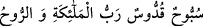

sûretin ve dış görüntünün güzel olmasında değildir.
Hâfız şöyle der:
Hakîkat yolcuları yarım arpaya bile almazlar
Hünerden yoksun kimsenin atlas libâsını
Câmî (k.s.) ise der ki:
Sûretin noksanlığından mânâ ehline ne gam!
Canı Rum’dan (beyaz) olanın, teni Habeş’ten (siyah) olsa ne zarar
Bir hadîste şöyle buyrulmuştur: “Allah sizin sûretinize ve mallarınıza bakmaz. Fakat
kalblerinize ve amellerinize nazar eder.”[171] Yâni sizin kalbleriniz ve amelleriniz
sâlih ise mutlaka makbûl ve mûteber olursunuz. İster güzel sûretleriniz ve değerli
mallarınız olsun, ister olmasın. Aksi halde makbûl ve mûteber olmazsınız. İşte zâhirde
ve bâtında hüküm böyledir. Anla!
Rivâyet olunur ki Allah Teâlâ, İbrâhim (a.s.)’ı dost edindiği vakit melekler: “Ey
Rabbimiz, onun nefis, mal, evlad ve kadınlarla meşguliyeti varken sana dost olması
nasıl uygun olur?” dediler. Bunun üzerine Hak Teâlâ: “Ben, kulumun sûretine ve malına
bakmam. Aksine onun kalbine ve ameline bakarım. Benim dostum da benden başkasına
muhabbet beslemez. İsterseniz onu sınayın!” buyurdu.
Bundan sonra Cebrail (a.s.), Hz. İbrahim’in yanına geldi. İbrahim (a.s.)’ın avlanmak
ve koyun sürülerini gözetlemek üzere on iki köpeği vardı. Dünyanın değersizliğini ve
hakirliğini göstermek için köpeklerinin halkasını altından yaptırmıştı. Cibril ona selam
verdi ve:
“Bunlar kimin?” dedi.
İbrâhim (a.s.):
“Bunlar Allah’ındır, ancak şu anda benim elimde bulunuyor.” dedi. Cebrâil (a.s.):
“Onlardan birini bana satar mısın?” dedi. İbrâhim (a.s.):
“Bir kere Allah’ı zikret, sürünün üçte biri senin olsun.” dedi. Bunun üzerine Cebrail
(a.s.):
“ Sübbûhun kuddûsün Rabb’ül-melâiketi ve’r-rûh
Meleklerin ve rûhun Rabbi yücedir, ben onu tesbîh ederim” dedi. Hz. İbrahim de
sürünün üçte birini ona verdi ve şöyle dedi: “İkinci defa Allah’ı zikret ve üçte birini
daha al. Üçüncü kez zikredersen, çobanları ve köpekleriyle birlikte tamamını alırsın.
Dördüncü defa zikredersen, ben de senin kölen olurum.”
Aralarında geçen bu konuşmadan sonra Allah Teâlâ ona:
“Ey Cebrail, dostumu nasıl buldun?” diye sordu.